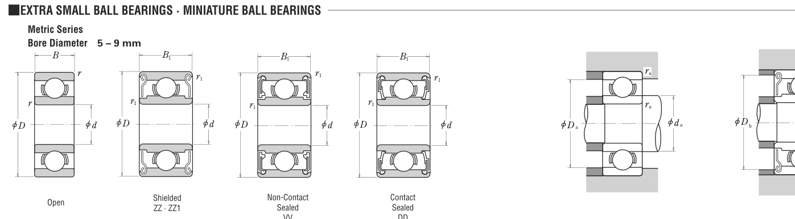

MR117 is a NSK ball bearing, bore 7 mm, O.D. 11 mm, width 2.5 mm, dynamic rating 0.5 kN. Dimensions, drawing, interchanges and price.

Scanned from the manufacturer catalogue page listing this part number. All part numbers printed on that table share the same drawing.
Blue = inner / outer ring, yellow = rolling element. Drawn to scale from this part's own dimensions for selection reference only - not a manufacturing or assembly drawing.
| Symbol | Dimension | mm | inch |
|---|---|---|---|
| d | Bore diameter | 7 | 0.2756 |
| D | Outside diameter | 11 | 0.4331 |
| B | Inner-ring / bearing width | 2.5 | 0.0984 |
| r | Chamfer (min) | 0.15 | 0.0059 |
Weights are given in kg. Load ratings are shown in both the original catalogue units and the converted value (1 N = 0.2248 lbf). Data is provided for selection reference only - confirm against the latest official catalogue before ordering.
| Bore d (mm) | 7 |
|---|---|
| Outside dia. D (mm) | 11 |
| Width B (mm) | 2.5 |
| Basic dynamic load rating Cr (lbs) | 112 |
|---|---|
| Basic static load rating Cor (lbs) | 45 |
| Basic dynamic load rating Cr (N) | 500 |
| Basic static load rating C0r (N) | 201 |
| Limiting speed - grease (rpm) | 43,000 |
| Limiting speed - oil (rpm) | 50,000 |
| Weight (kg) | 0.00062 |
|---|
| Housing fillet r max (mm) | 0.15 |
|---|
| C / P | Equivalent load P (N) | L10 (106 rev) | L10h at 3,000 rpm |
|---|---|---|---|
| 4 | 125 | 64 | 356 |
| 6 | 83 | 216 | 1,200 |
| 8 | 62 | 512 | 2,844 |
| 10 | 50 | 1,000 | 5,556 |
| 15 | 33 | 3,375 | 18,750 |
Basic rating life per ISO 281: L10 = (C/P)3 with C = 500 N. Hours = L10 x 106 / (60n). Life-modification factors for lubrication, contamination and temperature (aISO) are not included.
| Brand | NSK |
|---|---|
| Source catalogue | NSK CAT. No. E1103 (metric) |
| Catalogue page | p.196 (dimensions) |
Load ratings in newtons, weights in kg, limiting speeds for grease and oil lubrication.
| Designation | Brand | Type | d | D | B/T | Dyn. rating | kg |
|---|---|---|---|---|---|---|---|
| 607 | NSK | Ball | 7 | 19 | 6 | 525 lbs | 0.007 |
| 627 | NSK | Ball | 7 | 22 | 7 | 741 lbs | 0.014 |
| 687 | NSK | Ball | 7 | 14 | 3.5 | 265 lbs | 0.002 |
| 687ZZ\VV | NSK | Ball | 7 | 14 | 5 | 265 lbs | 0.003 |
| 697 | NSK | Ball | 7 | 17 | 5 | 362 lbs | 0.005 |
| MR137 | NSK | Ball | 7 | 13 | 3 | 0.6 kN | 0.002 |
| R168B | NSK | Ball | 6.35 | 9.53 | 3.17 | 0.5 kN | 0.001 |
| R4AA | NSK | Ball | 6.35 | 19.05 | 5.56 | 589 lbs | 0.007 |
Send us the quantity you need and we will come back with price and lead time, normally within 24 hours. Equivalent parts from other brands can be quoted at the same time.